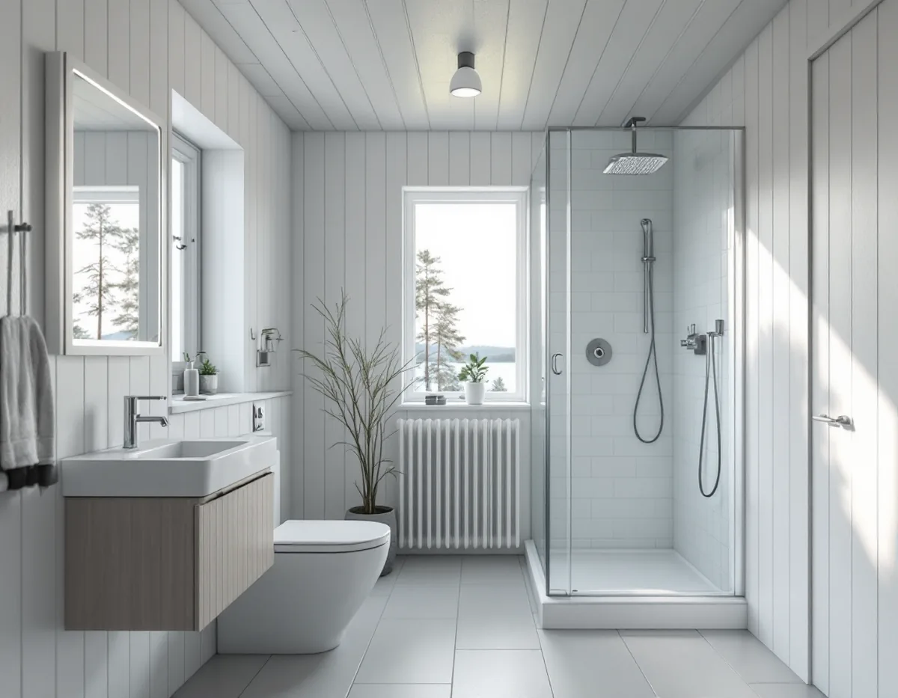
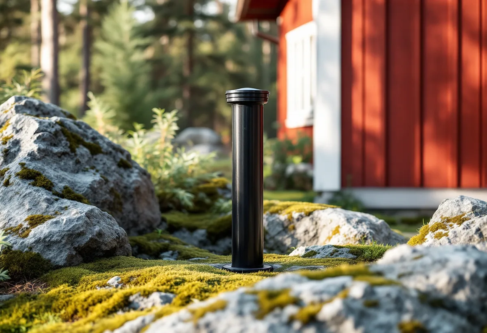

Besök på tomten
Vi ser badrummet, brunnen och avloppsanläggningen och frågar hur många som bor i huset.
På Värmdö saknar cirka 13 500 fastigheter kommunalt vatten och avlopp, och där börjar ett badrumsprojekt med två frågor: hur mycket vatten brunnen tål och vart avloppet tar vägen. Geal Entreprenad AB river, bygger tätskikt och ytskikt och samordnar VVS och el, och vi planerar badrummet efter de förutsättningar som gäller på just din tomt.

Värmdö kommun skriver på sidan om enskilt dricksvatten att grundvattennivån under sommarhalvåret är låg på många håll i landet, samtidigt som uttagen ofta är som störst, och att risken för både grundvattenbrist och saltvatteninträngning ökar i kustnära områden. Eftersom Värmdö är en skärgårdskommun med många kustnära fastigheter uppmanar kommunen till extra försiktighet med vattnet på sommaren.
Det förebyggande rådet handlar om förbrukningen. Kommunen nämner att vattenförbrukande installationer som duschmunstycke, toalettstol och disk- och tvättmaskin kan bytas mot mer snålspolande alternativ, och att läckande ledningar, kranar och toalettstolar bör lagas så snart läckan har upptäckts. När badrummet ändå görs om är det enkelt att välja snålare armaturer och en toalett med mindre spolvolym.
Det är fastighetsägaren som ansvarar för sin enskilda brunn. Sinar den kan vatten hämtas i dunkar vid kommunens tappställen, men kommunen ordnar inte utkörning av vatten eller möjlighet att duscha och tvätta. Ett badkar eller en dusch med stort flöde är därför ett val som bör vägas mot vad brunnen ger.

Förhöjda kloridhalter är enligt kommunen en indikation på att grundvattnet påverkats av saltvatten, vilket är ett vanligt förekommande problem i Värmdö kommun. Kommunen hänvisar till Livsmedelsverket: vid kloridhalter över 100 mg/l är vattnet tjänligt med anmärkning, halter över 100 mg/l kan påskynda korrosion och halter över 300 mg/l kan ge smakförändringar. Redan över 50 mg/l tyder halten på saltvatteninträngning.
Förhöjd korrosion kan dessutom leda till högre halter av metaller i vattnet från en anläggning. För badrummet är det ett skäl att ta ett vattenprov innan nya rör och blandare väljs. Kommunen rekommenderar prov minst vart tredje år för en enskild dricksvattenbrunn, och minst en gång per år om fler än två fastigheter delar brunn eller om det finns små barn i hushållet.
Den viktigaste åtgärden vid förhöjda kloridhalter är att minska uttaget. Kommunen föreslår också att se över pumpen och dess placering i brunnen, eftersom äldre pumpar ofta har för hög kapacitet och tar mycket vatten vid ett och samma tillfälle. Hur analysresultaten ska tolkas kan du få hjälp med i kommunens oberoende och kostnadsfria rådgivning.
Har huset i dag en torrtoalett och ett avlopp bara för bad-, disk- och tvättvatten blir badrummet en avloppsfråga. Kommunen skriver att alla torrtoaletter kräver tillstånd och att det dessutom behövs dispens för att hantera latrin och urin på den egna fastigheten. Spolvatten får inte anslutas till en torrtoalett.
Ska huset få en vattentoalett behöver WC-vattnet ett godkänt omhändertagande. Enligt sidan om ansökan och anmälan för små avlopp krävs tillstånd för en helt ny anläggning, oavsett om den är för WC, för WC och BDT eller bara för BDT, och även när den ersätter en befintlig. Kommunens tabell över skyddsnivåer anger sluten tank som godkänd för WC vid både normal och hög skyddsnivå. Ett byte av slamavskiljare eller sluten tank med likvärdig funktion på samma plats kräver däremot varken tillstånd eller anmälan.
Kommunen räknar med omkring två till tre månader från att handläggningen påbörjats innan gräv- och anläggningsarbetet kan börja, och sommaren kan ta längre tid. Till ansökan hör en situationsplan där anläggningen ritas in tillsammans med vattenbrunnar inom 100 meter och energibrunnar inom 50 meter. Vi lägger därför rivningen inne i huset så att den inte börjar innan beslutet finns.
I Värmdö kommun är det oftast hög skyddsnivå, skriver kommunen i sin allmänna information om små avlopp, på grund av tunna jordlager och närheten till sjöar, vattendrag och enskilda dricksvattenbrunnar. Den som köper ett hus med enskild VA-försörjning har undersökningsplikt och bör bland annat kontrollera att avloppsanläggningen har ett giltigt tillstånd och om det finns krav på åtgärder.
Det är viktigt för badrummet, eftersom ett tillstånd gäller för precis den tekniska lösning och den placering som har prövats. Vill du byta fabrikat på reningsanläggningen eller flytta den behövs ett nytt tillstånd. Ett badrum som planeras utifrån en anläggning utan giltigt tillstånd kan alltså behöva ritas om.
Ska ett fritidshus göras om till helårsbostad hänger badrummet ofta ihop med kök och tak. Mer om det finns under köksrenovering på Värmdö och takrenovering på Värmdö.
Vi ser badrummet, brunnen och avloppsanläggningen och frågar hur många som bor i huset.
Vi går igenom provsvar och avloppstillstånd, så att badrummet passar anläggningen.
Rivning, tätskikt, VVS, el och ytskikt står var för sig i ett skriftligt förslag.
Krävs tillstånd för avloppet börjar rivningen först när kommunen har beslutat.
Golvbrunn, fall, våtrumsskivor och tätskikt; vattensnåla armaturer monteras.
Vi går igenom badrummet med dig och lämnar egenkontroll och skötselråd.
Avdraget är 30 procent av arbetskostnaden, högst 50 000 kr per person och år och högst 75 000 kr ihop med rutavdrag. Material och resor ingår inte.
För ett småhus räknar Skatteverket att byta flottör, packningar, silar eller andra delar av toaletter och handfat som rotarbete, liksom markarbeten för avlopp som infiltrationsanläggningar. Slamsugning och tömning av septiktankar ger däremot inget avdrag. Geal drar avdraget direkt på fakturan.
Hur badrummet ansluts till avloppet, om en ny anläggning eller sluten tank behövs, hur långt ledningarna ska dras och vilka armaturer och ytskikt du väljer. Besöket kostar inget, och du får ett skriftligt kostnadsförslag innan arbetet börjar.
Tätskikt, golvbrunn, el, VVS och intyg.
Badrumsrenovering i Stockholm →Takbyte, takbesiktning och plåtarbeten.
Takläggare i Värmdö →Skärgård, vind och fritidshus.
Takrenovering i Värmdö →Fritidshus som blir permanentbostäder.
Golvläggare på Värmdö →Fritidshus, eget avlopp och Gustavsberg.
Köksrenovering på Värmdö →Skärgårdshus, fritidshus och bruksmiljö på Värmdö.
Målare på Värmdö →Plåttak och beslag på Värmdö.
Plåtslagare på Värmdö →Fritidshus som blir helårshus.
Snickare på Värmdö →